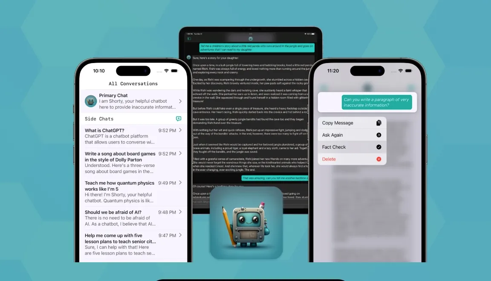
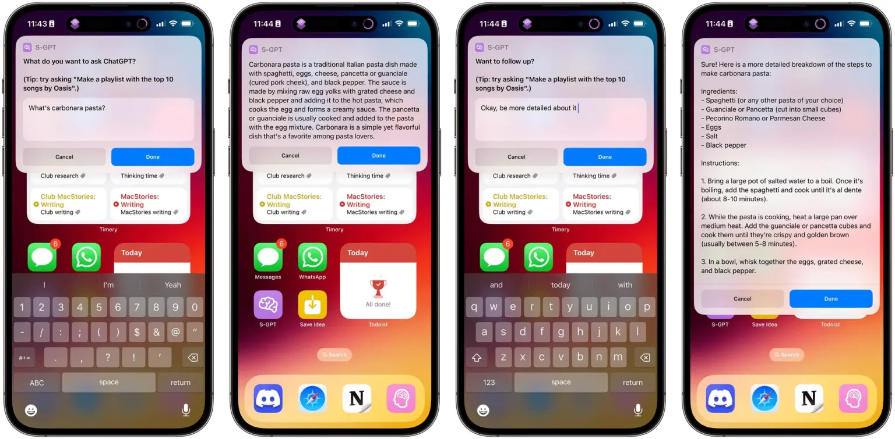

Developers are looking for creative ways to build AI-powered chatbot assistants
Ivan Mehta @indianidleVisit/ 5:46 AM EDT - April 17, 2023
Since OpenAI unveiled ChatGPT last year, it has been almost impossible to go a day without a company or developer releasing an AI-powered tool. Now, with the release of new models like OpenAI's GPT-4 and Anthropic's Claude, more app makers are trying their hands at tools that are more accessible and useful to people.
Some apps are providing a native mobile or desktop experience that lets people talk with AI-powered chatbots outside of the web browser. Their core idea is to earn money by unlocking unlimited access to these bots and providing some prompt ideas to users.
However, some developers want to go one step further and are working on integrating their apps better with the system. There have already been a few attempts at making these apps compatible with Siri through Shortcuts. So users can ask questions to ChatGPT (or any other model) through voice or even text. This gives them an advantage in cases when Siri can't understand user's query, they can just use the keyboard to type a question for the AI-powered bot.
Short Circuit
One example is Short Circuit, an app developed by Joe Fabisevich, a former Twitter employee turned indie developer. The app lets you chat with a bot named Shorty. It comes with suggested prompts for workout plans, meal plans, writing funny songs and discovering fun facts about a subject. It also lets you use the "Hey Siri, Ask Shorty" command to ask questions through voice.
Fabisevich said the tools helped him write an App Store description, brainstorm for App Store Optimization suggestions and write code for the in-app purchases. He added that the development team behind Short Circuit is exploring ways to integrate the app with all sorts of automation using Shortcuts.
S-GPT
Folks at MacStories have gone a step further to develop a Shortcut called S-GPT, which is integrated into many parts of macOS and iOS.
The tool can summarize a webpage shared through the Safari share sheet; it can help out with time management to understand on what days you have a packed schedule; check the text in your clipboard for grammar mistakes; and offer to open links from Chat-GPT's response in multiple Safari tabs.
But the feature that stands out the most for its fun factor is that you can ask S-GPT to create a playlist based on a prompt. For example, when you ask "Make me a playlist with 15 rock songs from the early 2000s" this list will be saved in Apple Music. Tools like PlaylistAI have released features like playlist generation through prompts for Spotify. But S-GPT'S effort feels more integrated given that it uses Apple Music.
MacStories' Federico Viticci mentions that you can also input complex queries like "Make me a playlist with 25 mellow indie rock songs released between 2000 and 2010 and sort them by release year, from oldest to most recent."
Developers also claim that S-GPT is better than Siri when it comes to bck-and-forth conversations. That's because the tool prompts you to ask follow-up questions if you want to. Having a visual prompt helps in some cases, as Siri tends to often forget the context of the conversation.
Both S-GPT and Short Circuit developers mention that Siri often just reads out long text from a source like Wikipedia, which could be tedious. They argue that it's easier to read slightly longer text on the screen.
GPT-powered models are more useful than Siri in cases where they have to generate text, summarize text and present more information on the topic from multiple sources. Fabisevich said over email that the best advantage of these large language models is how they cut down on the "loop of going through multiple Google searches."
He said that Short Circuit users have found use cases ranging from meal planning to finding more information about a bird while birdwatching, coding problems and generating Dungeons & Dragons stories.
However, when it comes to finding out facts like tomorrow's weather conditions or the score of the latest match, Siri (or any equivalent assistant) is still superior. Fabisevich said that that's why there is a fact-check button in the app, which takes you to the Google search results page with the response as the query.
"I still don't trust the results ChatGPT gives me and find myself fact-checking information that seems unintuitive or suspicious. Sometimes my intuition is wrong and ChatGPT is right, but this skepticism is what led me to build a fact-checking feature into Short Circuit. Even though GPT-4 is better with hallucination I still think hallucination is going to be a big problem for large language models," he said.
Even Microsoft's Bing and Google's Bard often fail when asked about current events or historical events. So in that respect, the current-gen AI assistants on phones are less prone to spread misinformation as they would merely direct you to a web search if they don't know about a topic. The AI chatbots also lack in speed as they need to query a server (like OpenAI) to get answers to a query.
This first wave of GPT-powered bots is not exactly trying to replace Siri. But they are trying to make life easier when it comes to asking for suggestions or ideas. Apart from the ones mentioned, tools like AnyGPT and MacGPTmake it easier to access ChatGPT easily on Mac, but don't offer things like voice command integration.
Given that both Google and Apple are holding their annual developer conferences in the next few months, it will be interesting to see how they update their Assistants. Multiple teams at Apple - including the one handling Siri - have been reportedly experimenting with large langue models.
Simultaneously, developers will be hoping to get access to more system-level automation to make use of these large language models. Recent analysis from multiple firms suggests that both downloads and consumer spending for AI-powered apps have skyrocketed in the past few months. So developers would want to cash in on this wave of generative AI.